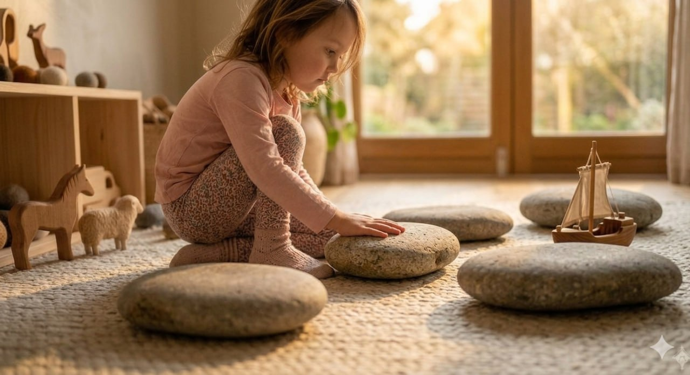
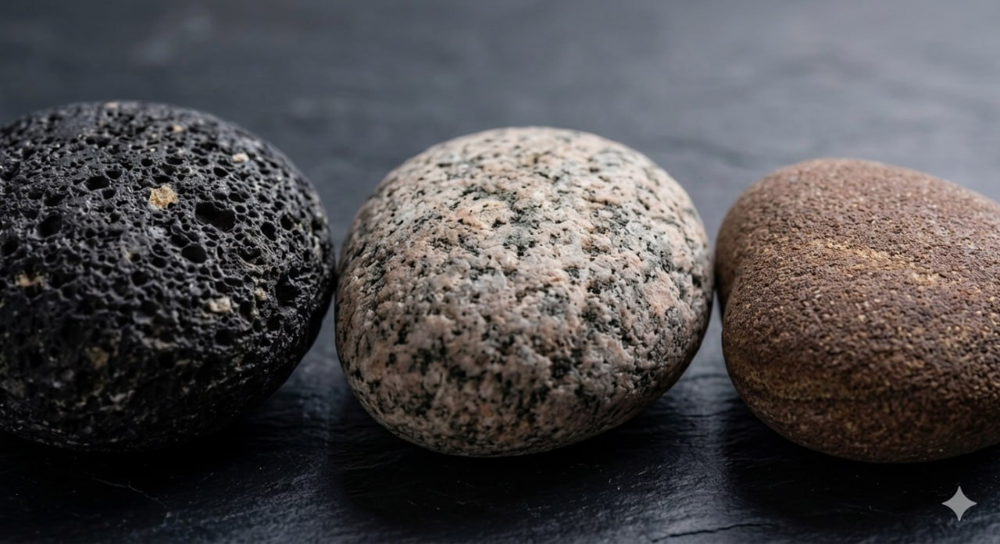

An invitation to pause.
Silicone stepping stones cast from the textures of real river rock — designed for the way children move, and the way a home looks when it is loved.


Silicone stepping stones cast from the textures of real river rock — designed for the way children move, and the way a home looks when it is loved.

Cast from the grooves and ridges of natural river stone. Every surface holds the memory of water and time.
Heavy, non-slip silicone that grips any floor — and grips your attention only when it earns it.
Colors drawn from riverbeds and forests. Stones that belong on a coffee table as much as in a playroom.
Durable enough for the wildest leaps. Clean with a damp cloth, or pop them in the dishwasher.


We watched our children longing for the forest floor, for the uneven joy of stone and root. We wanted to bring that grounding tactile experience indoors — without the neon plastic, without the clutter, without compromise.
Fjord & Fawn stepping stones are cast from real river rocks, capturing every ridge and groove. Made from food-grade silicone, they are heavy enough to stay put, soft enough to feel like the earth itself. They belong in a living room as naturally as a book or a candle.
This is not a toy. It is an invitation to move through the world with curiosity, balance, and care.
"My daughter crosses the room differently now — more deliberately, more confidently. These stones have given her a kind of quiet courage."
— Maria T., Vancouver, BC"I teach kindergarten. I've tried everything to get kids off screens. These are the first thing that actually works. They can't resist the feel of them."
— James R., Early Childhood EducatorWe are launching soon. Leave your name and we will reach out when Fjord & Fawn is ready to ship.